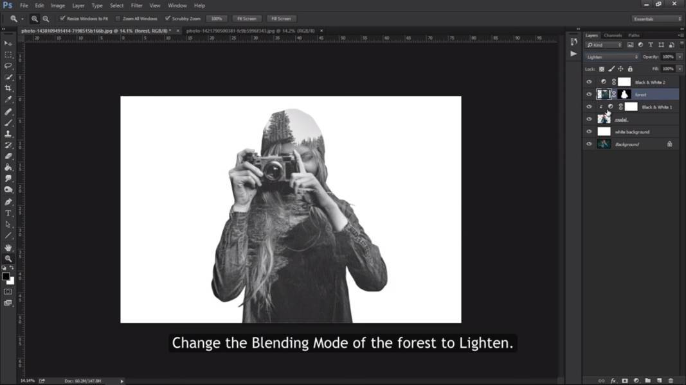

HOW TO MAKE A DOUBLE EXPOSURE EFFECT
In this tutorial, we'll use these two photos:
1. First, we need to cut out the model. Select the pen tool and use it to cut the model by tracing
it. The more time you take, the better the result will be!
2. Once you've selected the entire model, right click,
then select Make Selection.
3. Select Feather Radius as 0 pixels. Then Hit OK.
4. Press "Ctrl + J" to duplicate your selection and rename the layer formed to "model".
5. Create a new layer and bring it below the "model" layer. Let's rename this layer
to say "white background"
6. Select White or any other color of your choice for the background.
Then select "white background" layer. Press "ALT + Backspace" to fill it with your selected color.
7. Create a new adjustment layer. Then select black and white.
8. Select the Clipping Mask. Then hit exit.
9. Insert the second forest image on top and release the clipping mask.
Rename the layer to "forest". Then, resize the image as you desire by pressing "Ctrl + T".
After resizing, press Enter.
10. "Ctrl + T" on the thumbnail of the "model" to make a selection.
11. Then head down and select the Mask Tool.
12. Create a new adjustment layer, Then select Black & White. Exit the properties
panel.
13. Select the "forest" layer. Change the blending mode of "forest" to Lighten.

There you have it! This fill be the final produce:
